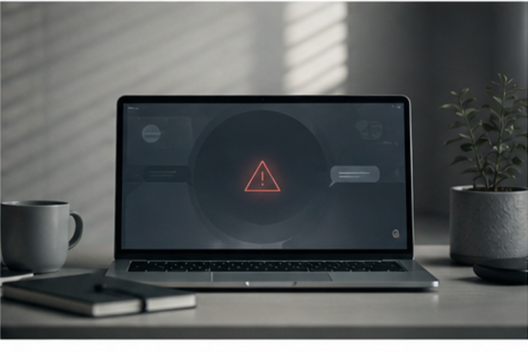

Tech
Top stories

Artificial Intelligence
OpenAI Quietly Retires GPT-4o, and the Internet Is Grieving
The company says its new flagship is smarter, safer, and more cautious. For millions of users who treated the older model like a friend, the change has not gone over quietly.
Business
AI Companion Startups See Spike in Sign-Ups After 4o Sunset
More to read
Opinion
We Were Never Supposed to Love the Chatbot. So Why Do We?
Politics
Senate Panel Sets Hearing on AI Mental-Health Risks for December
Culture
"i miss 4o": The Subreddit That Became a Group Eulogy
Tech
What GPT-5 Won't Talk About — And Why That's a Feature

World
EU Regulators Push for Disclosure Rules on "Companion" AI Models
Business
OpenAI Shares Slip in Premarket Trading on Sentiment Backlash
Opinion